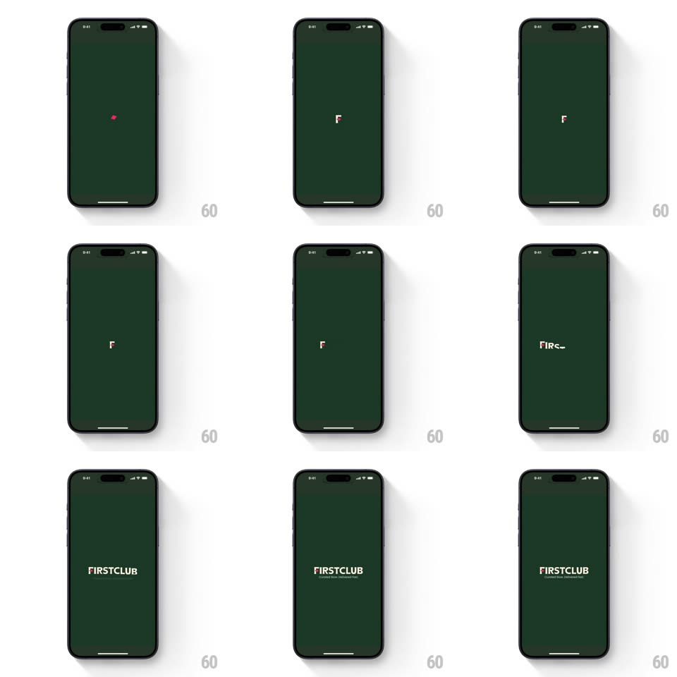

Media
Frame-by-frame

Rebuild this animation 1:1: FirstClub's splash - on a deep green screen a single red dot appears, morphs into the red-and-white "F" monogram, and expands into the full "FIRSTCLUB" wordmark with its tagline.

Rebuild this animation 1:1: FirstClub's splash - on a deep green screen a single red dot appears, morphs into the red-and-white "F" monogram, and expands into the full "FIRSTCLUB" wordmark with its tagline. ## Integration Integration: stack-agnostic spec - springs given as stiffness/damping, timed motions as duration + curve; map every value to your framework and animation library of choice. ## Scene Deep forest-green screen, otherwise empty: a tiny red dot at center, then the "F" monogram (white letterform with a red accent), then the "FIRSTCLUB" wordmark in white serif caps with the tagline "Curated Store. Delivered Daily." in small type below. ## Motion spec Pattern: logo build, ~1.8s total. - Dot: the red dot fades in and holds (250ms), then scales up (0.4 -> 1, spring ~360/20, 300ms). - Morph: the dot stretches into the F's red accent stroke (250ms, ease-in-out) as the white letterform draws on around it (stroke reveal, 300ms). - Wordmark: the F splits outward - letters of FIRSTCLUB slide in from both sides to meet at center (300ms, ease-out, 25ms stagger per letter), the F shrinking into place as the first glyph. - Tagline: the small tagline fades in below (250ms, +150ms), letter-spacing easing from +0.2em to normal. ## Calibration - One accent color: red appears only in the dot and the F's accent - nothing else. - The whole sequence is centered; nothing moves off-axis. ## Reduced motion Dot crossfades to the finished wordmark (300ms); tagline fades. ## Don't miss - The dot-to-logo morph is continuous - the dot is the seed of the F, not a separate loader. - The background is a flat deep green with no texture or gradient.